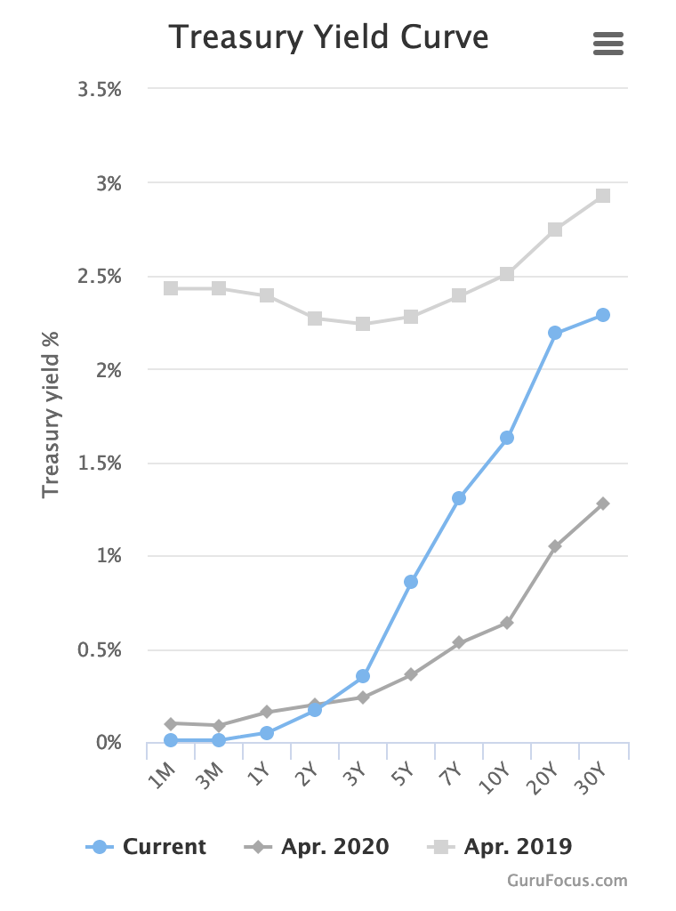

RSS Feed
RSS Feed
Bonds Bonanza 1: Bonds Basics
30 Apr 2021This is part of a series of posts on finance.
During the second part of February, US treasury bonds yields rose sharply, from 1.13% to more than 1.6%. (If you have no idea what that means, everything will become clear after reading this article.) While these levels are historically very low, the move was quite sudden, and this had big repercussions in the stock market.
In particular, it triggered (or accelerated) a rotation into value where growth stocks got beat down, while value stocks soared.
As previously reported, the change caught me by surprise and wiped out the investment gains I made over the past three months. I didn't understand — and to be honest, still don't really — how these movements in the bond market could affect the stock market so much. It did cause me to read a lot about the bond market however, and today I'm sharing what I learned.
In this article I'll cover the basics of bonds and the bond market. In a subsequent article, I'll look at some explanations for the sudden surge of bonds yield, and finish with some clues about how such bond market moves can impact the stock market.
What are bonds, and how do they work?
The clearest explanation of the bond market I've found is the Marketable Securities section of the wikipedia page on US bonds. I encourage you to read it.
To summarize, the US government (like all governments) is partly financed via debt. The treasury emits treasury securities of various maturities — from 4 weeks to 30 years. Treasury bonds are theoretically 30-years securities, but the terms "treasury bond" is frequently used to refer to all treasury securities. The most watched security is the 10-years bond — the 1.13% and 1.6% yield rate mentionned in the intro are 10-years yield rates.
Bonds have a face value (e.g. 100$) and a coupon rate, for instance 2%, meaning the bond holder is entitled to a 2% payment every year (e.g. 2$ for a 100$ bond). In practice, these payments are made every 6 months, but that's not super important. At the end of its maturity period, the bond "matures" and the principal (face value) is paid back. Shorter-term bonds (less than 2 years) have no coupon payments and the coupon is paid in full when the bond matures.
More interestingly, you can't purchase bonds at their face value. In fact, you can't purchase bonds directly from the treasury at all — only select institutional investors (pension funds, banks, etc) can, and they take part in an auction. This is because the "real" (or rather, estimated) value of a bond with 100$ face value is not 100$ — it's 100$ + the present discounted value of the coupon payments.
What's that discounted value? Well 1$ in a year is worth less than 1$ now — because if you had this dollar now you could invest it and maybe have 1.10$ in a year or something. So the present value of 1$ in one year is the sum that, if invested today, would grow to 1$ in a year's time. So for a 100$ bond with 2% coupon rate, we know it is worth more than 100$, but less than 120$. (*)
After being purchased by an institution, the bond can be traded on the open market, where its price fluctuates. The price of the bond determines the yield rate, which is the rate you can effectively earn by purchasing the bond at the market price. So for instance, our 100$/2% bond is worth 120$ in 10 years. If its market price rises to 110$, the effective yearly rate (the yield rate) is now (120$-110$)/110$ = 0.9%.
The somewhat unintuitive effect of this is that the yield goes up when people sell bonds (and the bond price goes down), and the yield goes down when people buy bonds (and the bond price goes up).
(*) It's possible for a 100$ 2% coupon bond to be worth more than 120$, if the bond has negative yield (negative real returns). While this means that you lose money holding the bond compared to holding cash, it can happen because institutional investors may be forced to hold bonds regardless of price. In the long term, some countries' treasury bonds are also regarded safer than the banks holding your cash, which may default (this is mostly an issue for institutions, which manage a boatload of money).
The Yield Curve
There's one detail left to clarify. So far we've been talking about bonds as though they're a singular security with a single price. In reality, there are thousands of types of bonds in circulation! The bonds may have different coupon rates and different maturities: not only are there 5-years bonds and 10-years bonds, but a 10-years bond emitted 6 months ago does not trade at the same price as a 10-years bond emitted today!
How do we abstract all this mess? And how are we able to quote a single 10-years yield rate, when there are many 10-years maturity bonds (emitted in 2019, 2020, 2021, ...) and many bonds with 10 years left on the clocks (newly minted 10-years bonds, 20-years bonds from 2011, 30-years bonds from 2001, ...).
The answer is elegant: the yield curve. This curve gives the yield for a given maturity. Here maturity is to be understood not as the maturity at the time when the bond was emitted, but as the remaining time until the bond matures and the principal is paid back.

First, you have to recognize that any bond with the same time left until maturation has the same yield — no matter what the original maturity and coupon rates were! If that wasn't the case, anyone who owns the lower-yield bond would sell it to buy the higher-yield bond. This very process pushes the lower-yield bond price down (and therefor its yield up) and the higher-yield bond price up (and therefore its yield down) — until the two bonds have the same yield.
However, bonds with different time left until maturation do have different yield rates. Typically (but not always, see below), higher remaining maturity bonds have higher yield.
This is due to risk. Imagine inflation rises to 5% per year. Suddenly, earning 2% yearly does not seem so good anymore, as the return in inflation-adjusted terms is now about -3%.
If you just bought a 1-year bond for 103$ at 2% yield, and the yield rises to 5%, it means the bond price must decrease to 100$. A ~3% loss.
However, if you just bought a 10-years bond for 130$ with 2% yield (given a fixed yield, a longer term bond is necessarily more expensive given, because it pays coupons for longer), and the yield rises to 5%, the bond price must decrease to 100$ — a ~23% loss!
So longer-term bonds are riskier in case inflation flares up. For this reason, they tend to command a higher yield.
Nevertheless, it is occasionally possible for shorter-term bonds to command a higher yield rate than long-term bond, leading to an inverted yield curve. This happens when people expect deflation (money increasing in purchasing power, a negative inflation rate) or desinflation (a lowering of the (still positive) inflation rate), in which case purchasing long-term bonds allows you to "lock in" the current yield rate. Other unusual scenarios are possible.
An inverted yield curve is often treated as a sign announciating a recession, and did for instance happen in 2006, more than a year before the start of the great financial crisis. That being said, I feel like an inverted yield curve is unlikely to recur any time soon. The US government just injected trillions into its economy, so inflation, not deflation, is on all the lips.
You can consult the official yield rates on the US treasury website and you can visualize the curve on gurufocus.
That's it for today! Next time we'll look at what might have caused the surge in bond yields in February. We'll also look at some hypothesis explaining why this affected the stock market.